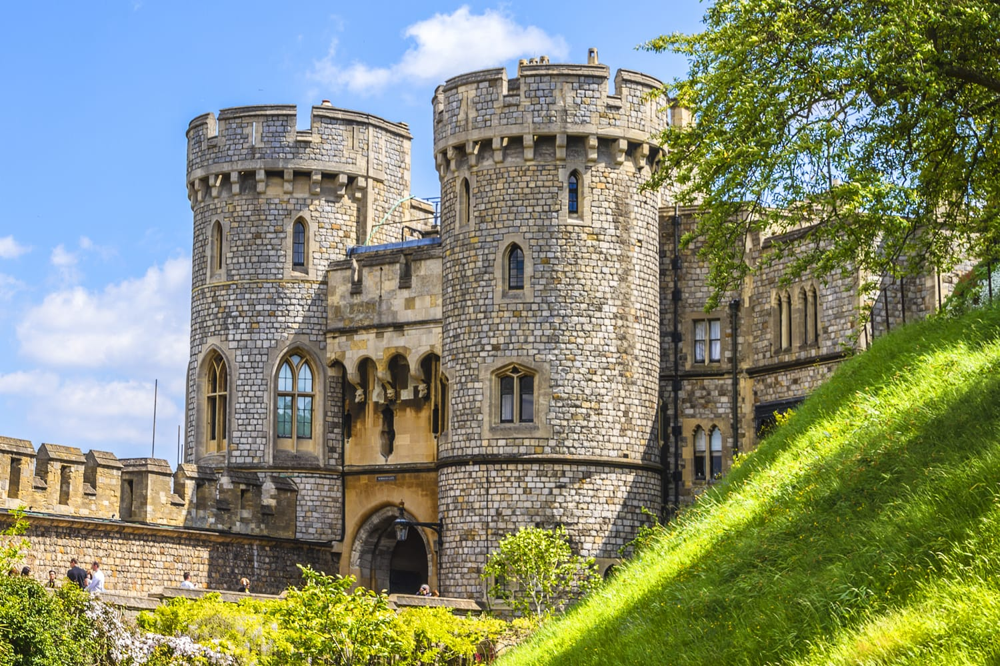

Welcome to the World of Gothic Literature
Explore the dark, eerie, and fascinating world of Gothic literature. From its origins to modern interpretations, delve into the works and authors that define this genre.
The Origins
Gothic literature first emerged in the late 18th century, blending elements of horror, romance, and the supernatural. Key authors like Horace Walpole with his novel "The Castle of Otranto," Ann Radcliffe's "The Mysteries of Udolpho," and Mary Shelley's "Frankenstein" paved the way for this dark and mysterious genre. These works often featured gloomy settings, haunted castles, and complex, tormented characters.
Modern Gothic
While the roots of Gothic literature lie in the past, the genre has evolved and continues to captivate readers today. Contemporary authors like Stephen King with "The Shining," and Neil Gaiman with "Coraline" have embraced Gothic themes, bringing a modern twist to the eerie and unsettling tales. Modern Gothic literature often explores psychological horror and complex character relationships.
Books and Authors
- Frankenstein by Mary Shelley
- Dracula by Bram Stoker
- The Haunting of Hill House by Shirley Jackson
- The Shining by Stephen King
- Coraline by Neil Gaiman
- The Fall of the House of Usher by Edgar Allan Poe
Famous Gothic Themes
Gothic literature often explores themes such as the uncanny, the grotesque, and the sublime. It delves into the darkest corners of the human psyche, revealing our deepest fears and desires. Common motifs include haunted houses, madness, death, and the supernatural. These themes create a sense of unease and fascination, drawing readers into the eerie world of Gothic fiction.
Influence on Popular Culture
The Gothic genre has had a significant impact on popular culture, inspiring movies, television series, and even fashion trends. Its influence can be seen in everything from Tim Burton's films to the goth subculture. The dark, moody aesthetics and themes of Gothic literature have permeated various forms of media, captivating audiences with their mysterious and unsettling charm.